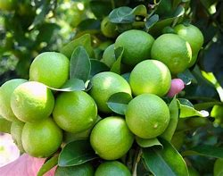
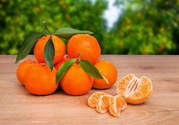

Naranjas Premium
Naranjas dulces y jugosas, perfectas para jugo fresco
Orgánico
Calidad de Exportación

Limones Frescos
Limones brillantes y vibrantes, ideales para cocinar y para bebidas
Orgánico
Calidad de Exportación

Limas Frescas
Perfectas para cócteles y creaciones culinarias
Orgánico
Calidad de Exportación

Mandarinas Dulces
Fáciles de pelar, perfectas para un snack saludable
Orgánico
Calidad de Exportación